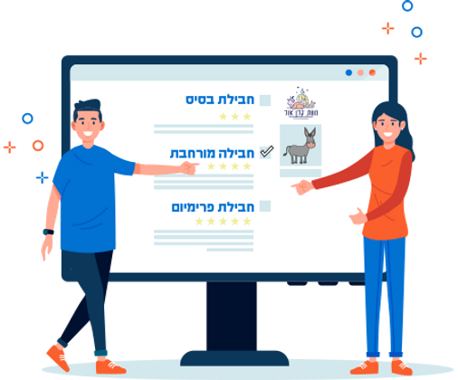
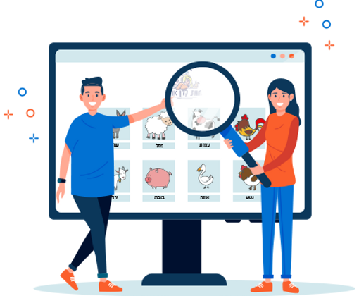
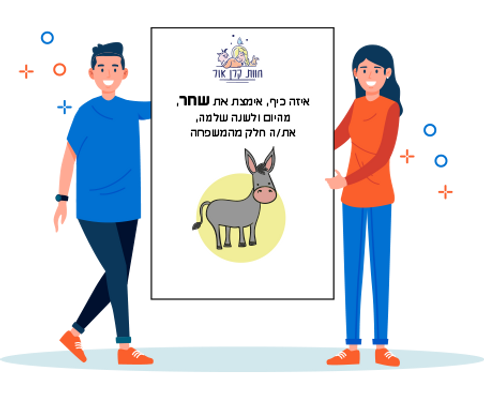
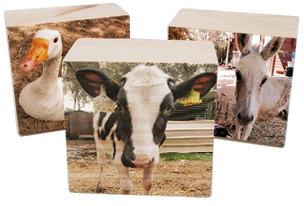

This is your chance to adopt a resident at the farm — Virtual Adoption!
Tax-Deductible Donation: Keren Or Association has received Section 46 approval under the Israeli Income Tax Ordinance: anyone who donates more than ₪190 to a public institution (or several public institutions) is eligible for an income-tax credit for that tax year. Now our dear donors can both help save animals and receive a tax credit.



Every adoption is a lifeline for an animal in our care. Choose the package that feels right for you.
*Adopters Day admission is for two people; additional tickets can be purchased at the farm-tour rate.
*Adopters Day admission is for two people; additional tickets can be purchased at the farm-tour rate.
*Adopters Day admission is for four people; additional tickets can be purchased at the farm-tour rate.

Meet the animals of Keren Or Farm. Click any resident to read their full story.

Aviv, the little donkey, was found in the Jerusalem area with terrible wounds and infections in his legs, standing on three legs and racked with pain.

Alpha is desperate for a home — please help us help her. She came to the farm after living through a nightmare no dog should ever endure.

Babe, our sweet pig, came from the meat industry. Bought for a petting corner, once he grew up he was no longer an attraction — and no one wanted him.

Herzl, our wonderful kid goat, arrived at the farm — and this is his story.

One day the news reported that Ministry of Agriculture officials and the Tzfat municipality removed many cats from a resident's apartment. The cats were in horrific condition.

Meet our Yael. She was born in a dairy pen alongside many brothers and sisters. After a few days she began to limp, and no one knew why.

Meet Lior. Volunteers found her in a sewage stream under a bridge in freezing Be'er Sheva — a young cow limping, her hind leg apparently broken.

Meet our little Mini. She was the dog of an elderly, visually impaired woman in Be'er Sheva who stayed mostly in the yard.

Steven is an extraordinarily sweet puppy, strong beyond his size. A shattered vertebra left him with complete paralysis in his hind legs.

Meet our small, beloved Penny — a tiny puppy who just wants warmth and love. She was found dragging herself using only her front legs.

Little Shachar was miraculously saved from abusive hands. A torn horseshoe left her with a very serious wound and unable to bear weight on her leg.

Our Eli was born with orthopedic problems. He struggled to stand on his own — and certainly couldn't walk.

Meet our Angela. She was found in Be'er Sheva after being abused — wounded, with graffiti drawn on her body.

Meet our Dolly. Born into a farm with too many females, a kind woman from a northern kibbutz took her home — and later brought her to us.

At 29 years old, after a life of work and giving, Venus came to us to begin her most peaceful, free and pampered chapter yet.

Meet our Yossi. He was born on a dairy farm where there's no use for male kids, and their fate is usually a bitter one within the industry.

Meet our Louie — a tiny, gorgeous little dog in a wheelchair.

Meet Muffin — a small, sweet Shih Tzu puppy with a brave heart that never stops choosing hope.

Nila was diagnosed with a congenital defect at two months old that prevented her from moving her hind legs. Her owners threw her into the street.

Meet our small, beloved Ofri — a tiny calf born prematurely on a dairy farm.

Tzvika arrived with Malka — a pair of innocent baby donkeys who had already endured neglect and deprivation in their short lives.

Many people don't yet know Sarah's story — and she's so sweet that you simply have to.

Can someone explain how? How is it even possible to abandon a creature so beautiful and powerful — a tiny baby, thrown into a field at the peak of summer heat?

Welcome home, sweet ones. After the hell you've been through, we promise you'll be safe and protected here — for the rest of your lives.

On last Valentine's Eve a small sweet surprise was born at the farm: Didi — a playful, curious kid goat full of life.

In early May 2023 we received a call about a paralyzed kid goat found in a field. What followed is a fascinating story about a little goat.

Meet Dandy, Yoko and Miki. Rescued at three months old from Kibbutz Lahav, where they were destined for slaughter at six months.

Loki was found on the shoulder of a highway — a small, battered puppy who had tried for hours to drag himself to safety.

Meet Momo, our cow. She was found running frightened along a road when she was only a day or two old.

Three months ago a true miracle happened — a tiny calf was born 47 days premature, in critical condition, with no chance of survival.

Pika's rescue was one of the hardest we've ever done — tied under the sun with no water, grass or shade at the lowest point on earth.

Shoham "landed at the farm" — she was left by the gate. A week later we discovered she had fallen from a truck on its way to slaughter.

Meet our Tami. Tami belonged to egg smugglers — two young boys used to walk her around, cracking a whip and beating her.